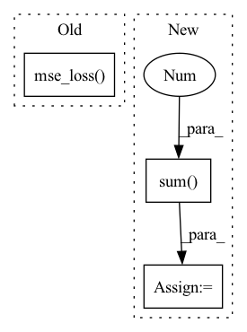

Pattern ID :581
Before Change
predicted_patches = predicted_patches[mask]
discretized_target = discretized_target[mask]
loss = F.mse_loss( predicted_patches, discretized_target)
return loss
// main classAfter Change
bin_mask = 2**torch.arange(c * bi - 1, -1,
-1).to(discretized_target.device,
discretized_target.dtype)
target_label = torch.sum( bin_mask * discretized_target, -1 )
predicted_patches = predicted_patches[mask]
target_label = target_label[mask]
loss = F.cross_entropy(predicted_patches, target_label)In pattern: SUPERPATTERN
Frequency: 3
Non-data size: 3
Instances Fragment ID: 2236770
Project Name: lucidrains/vit-pytorch
Commit Name: 73de1e8a7306e94be410cfcc07b9e7dff0a6ce59
Time: 2021-03-07
Author: zackankner@gmail.com
File Name: vit_pytorch/mpp_pytorch.py
M Class Name: MPPLoss
N Class Name: MPPLoss
M Method Name: forward(4)
N Method Name: forward(4)
M Parent Class: nn.Module
N Parent Class: nn.Module
M File Name: vit_pytorch/mpp_pytorch.py
N File Name: vit_pytorch/mpp_pytorch.py
M Start Line: 58
M End Line: 65
N Start Line: 58
N End Line: 70
Before Change
for latent, q in zip(latents, quantizeds):
l2QLoss.append(F.mse_loss(latent.detach(), q, reduction="none").mean(axis=(1, 2, 3)))
l1QLoss.append(F.l1_loss(latent.detach(), q, reduction="none").mean(axis=(1, 2, 3)))
l2QLoss.append(0.00001 * F.mse_loss( latent, q.detach(), reduction="none") .mean(axis=(1, 2, 3)))
l1QLoss.append(0.00001 * F.l1_loss(latent, q.detach(), reduction="none").mean(axis=(1, 2, 3)))
l1QLoss = sum(l1QLoss)After Change
// summedProb = batchWiseLogit.sum(1)
posterior = OneHotCategorical(logits=batchWiseLogit)
prior = OneHotCategorical(probs=torch.ones_like(batchWiseLogit) / batchWiseLogit.shape[-1])
reg = torch.distributions.kl_divergence(posterior, prior).sum(-1 )
reg += compute_penalties(batchWiseLogit, allowed_entropy=0.1, individual_entropy_coeff=cv, allowed_js=4.0, js_coeff=cv, cv_coeff=cv, eps=Consts.Eps)
// reg = reg / diversity
regs.append(reg)
regs = sum(regs) Fragment ID: 2236771
Project Name: xiaosu-zhu/mcquic
Commit Name: 6a7990547d3b9f68e7377cfc03ef1edd64929802
Time: 2021-03-24
Author: xiaosu.zhu@outlook.com
File Name: src/mcqc/losses/structural.py
M Class Name: CompressionLossTwoStage
N Class Name: CompressionLossTwoStage
M Method Name: forward(8)
N Method Name: forward(8)
M Parent Class: nn.Module
N Parent Class: nn.Module
M File Name: src/mcqc/losses/structural.py
N File Name: src/mcqc/losses/structural.py
M Start Line: 53
M End Line: 90
N Start Line: 69
N End Line: 90
Before Change
for latent, q in zip(latents, quantizeds):
l2QLoss.append(F.mse_loss(latent.detach(), q, reduction="none").mean(axis=(1, 2, 3)))
l1QLoss.append(F.l1_loss(latent.detach(), q, reduction="none").mean(axis=(1, 2, 3)))
l2QLoss.append(0.01 * F.mse_loss( latent, q.detach(), reduction="none") .mean(axis=(1, 2, 3)))
l1QLoss.append(0.01 * F.l1_loss(latent, q.detach(), reduction="none").mean(axis=(1, 2, 3)))
// regs.append(-1e-4 * ((latent ** 2).mean((1, 2, 3)) + (q ** 2).mean((1, 2, 3))))
After Change
posterior = OneHotCategorical(logits=batchWiseLogit)
prior = OneHotCategorical(probs=torch.ones_like(batchWiseLogit) / batchWiseLogit.shape[-1])
reg = torch.distributions.kl_divergence(posterior, prior).sum(-1 ) + compute_penalties(batchWiseLogit, allowed_entropy=0.1, individual_entropy_coeff=1.0, allowed_js=4.0, js_coeff=1.0, cv_coeff=1.0, eps=Consts.Eps)
regs.append(reg)
// reg = reg / diversity
regs = sum(regs) Fragment ID: 2236772
Project Name: xiaosu-zhu/mcquic
Commit Name: 8c71ec66b33adcc34c3c3769caf2b9087dd03ff1
Time: 2021-03-31
Author: xiaosu.zhu@outlook.com
File Name: src/mcqc/losses/structural.py
M Class Name: CompressionLossTwoStage
N Class Name: CompressionLossTwoStage
M Method Name: forward(6)
N Method Name: forward(6)
M Parent Class: nn.Module
N Parent Class: nn.Module
M File Name: src/mcqc/losses/structural.py
N File Name: src/mcqc/losses/structural.py
M Start Line: 130
M End Line: 151
N Start Line: 146
N End Line: 151